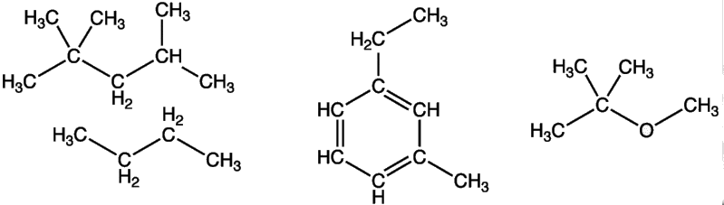
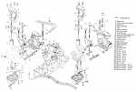
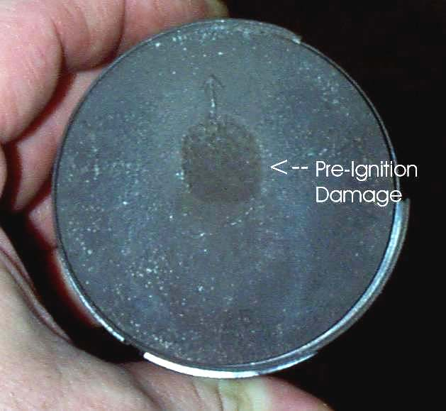
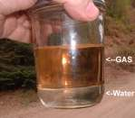
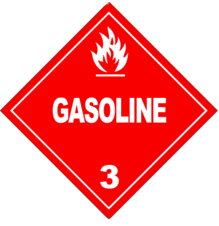

Main Components of Gasoline
¶ That is because static electricity can and will light you off! One cupful of gas has the explosive power of two (2) sticks of dynamite. Modern gas also has benzene and other nasty stuff in it thanks to the EPA (but no lead!). Gas, years ago, had octane and lead and was safer to handle, but no more. Humm, In the old days (1967-68) I could actually taste gas and tell you if it was hi-test or regular. Humm, I'm still alive! Humm, I would never do that now with with benzene in the gas. Humm, but we have safer, better gas now... right ? ? ? Are you sure? (Thanks EPA!)
Gas is neat stuff, but it has one bad habit (other than burning you up)... it rots, decomposes, turns into varnish and goos up your carburetors. A small amount of gas, like a pint, can go bad in as little as two weeks. A large amount, say 20 gallons, can stay good for a year or so.

The cure? Real easy... put fuel stabilizer in the gas. Any of the different brands will do. Just follow the directions on the bottle. It's a real life saver. If you have engines that sit for long periods of time between uses just use stabilizer, in the gas, all the time. It won't hurt anything. Then when you need the engine, just fire it up and go. Once a year I would change the old gas for new, just for GP (General Principal). Pour the old gas in your car gas tank, so you don't waste it. Remember to put stabilizer in the new gas too.
There is a lot of misinformation on gas octane out there. So let's take a look at it. If you have a high compression ratio, you are squeezing a lot of air into a little space. Whenever you compress air it gets hot. Lots of compression equals lots of heat. When you heat an explosive mixture it tends to explode. Now this explosion is what we want, but we want it to occur at the right time. That is when the spark plug fires. If the fuel mixture starts to burn before the spark plug fires you end up with two flame heads. One from the spark plug and one from wherever a hot spot developed in the combustion chamber. When these two flame heads hit each other there is a lot heat and pressure, and it goes PING! This is called pre-ignition. Also known as knocking or pinging. The engineers say these things, pre-ignition, knocking, and pinging are all separate events but that does not make much difference to you and me.

Because of this octane thing, it is always a good idea to try different brands and/or grades (regular, hi test, premium, etc.) of gas, especially if pinging is a problem. I can think of at least one bike (the old, old Honda 50's) that ran better on low octane, regular gas. Oh yes, most of those oxygenated fuels are just gas with up to 10% or so alcohol added. Alcohol can damage carb bodies and rubber parts in older machines. However, it is good to take moisture (water) out of the fuel system.

If you use starting fluid use only a VERY SMALL AMOUNT, if you use too much it can BLOW your muffler, engine, and maybe YOU up...Not Good!
If the engine does not start, find out why. Do not pour more starting fluid down it!

 |
Copyright © 1999-2002 dansmc.com. All rights reserved.